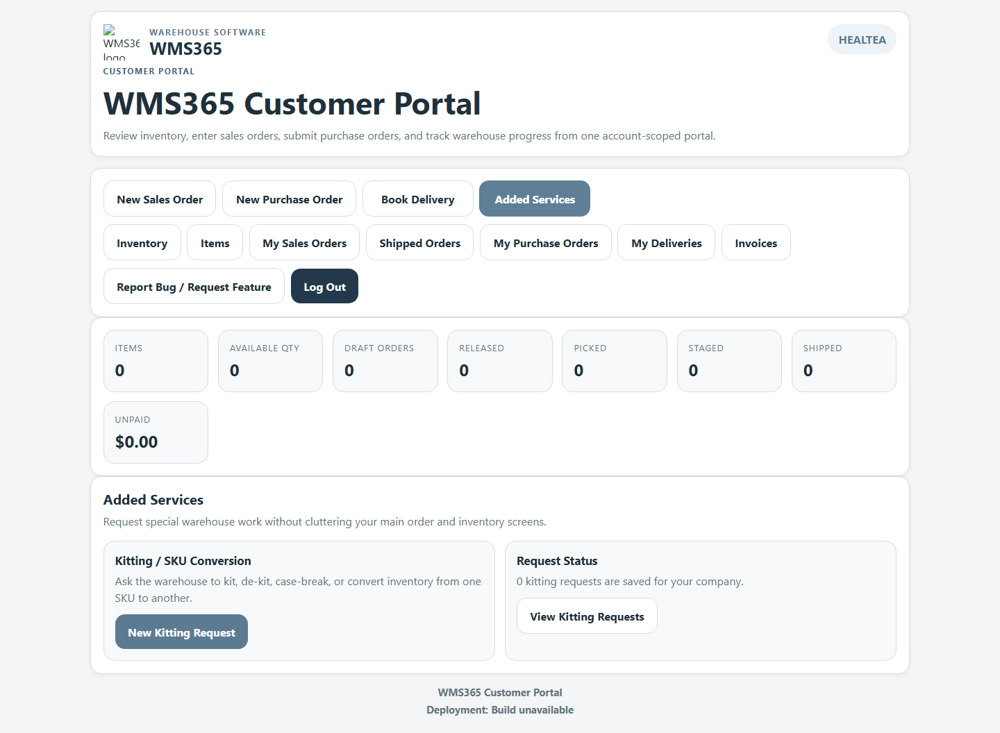
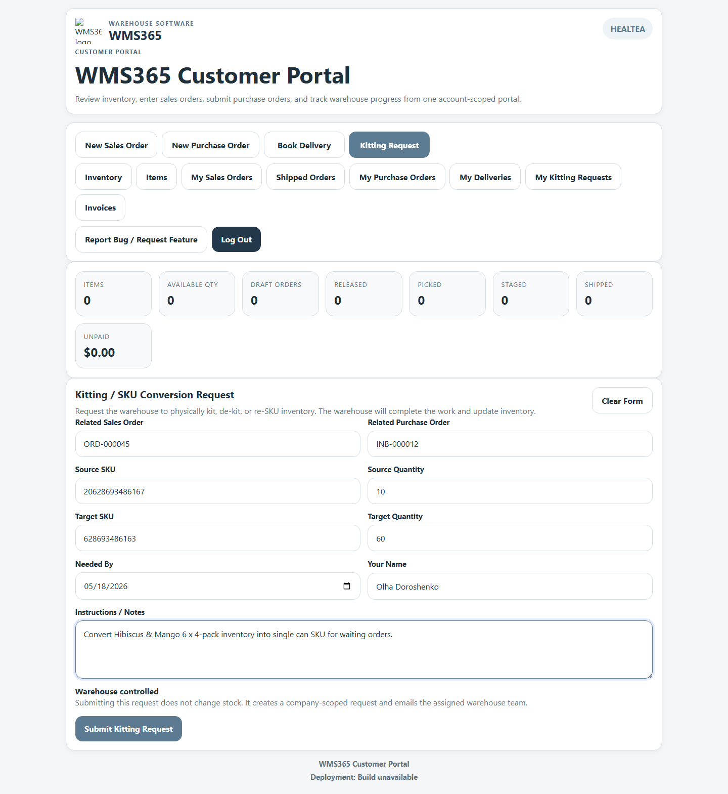
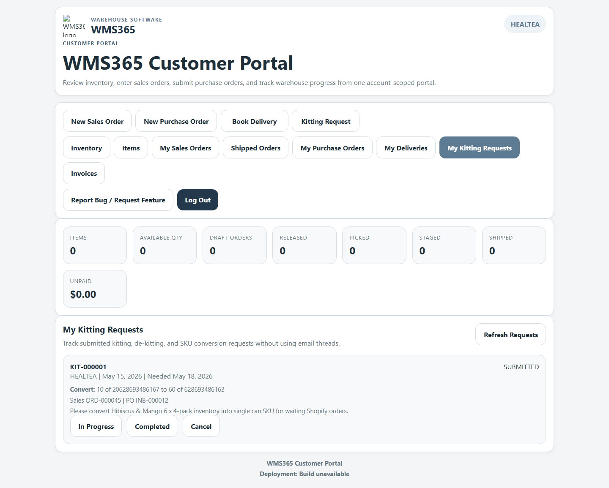

This guide shows how to request warehouse work to pull an existing SKU and create, convert, kit, de-kit, or re-SKU inventory into another item.
Enabled for Pure Foods by Estee
The warehouse can only complete the work if the source components are available in inventory.
Go to www.wms365.co and sign in to the customer portal using your Pure Foods portal login.
After login, use the main menu to select Added Services.
Ask the warehouse to kit, de-kit, case-break, or convert inventory from one SKU to another.

Click New Kitting Request.
This opens the form for converting one item into another item.
Fill in the kitting request fields.

Use the notes field to explain exactly what needs to happen.
After submission, open My Kitting Requests to track status.
